IntegrantesAmanda Luz · Eric Albuquerque Gabriel Aniceto · Mircio Ferreira
Descrição do Domínio
O CESAR EDU é uma plataforma de formação contínua para servidores públicos municipais, que organiza trilhas de aprendizagem por secretaria e centraliza o trabalho de gestores, professores e servidores.
Nosso sistema apoia atividades como o cadastro de professores e alunos, a gestão de cursos, módulos, aulas, materiais e provas, a matrícula e o acompanhamento de progresso, os comentários nas aulas e a avaliação dos cursos.
Além disso, o CESAR EDU melhora a comunicação por meio do mural de avisos do gestor, da homologação de pedidos de acesso a outras trilhas e de um dashboard com indicadores de engajamento e desempenho.
Dessa forma, a plataforma torna a capacitação mais acessível, acompanhada e transparente, incentivando a constância nos estudos.
Subdomínios
Trilhas
Catálogo de Cursos
Avaliação (Provas)
Aprendizagem do Aluno
CESAR EDU
Acesso Interdisciplinar
Comunicação
Analytics do Gestor
Identidade e Acesso
Core · diferencial do negócioApoio · necessário, não diferencialGenérico · solução padrão
Domínios centrais
CORE
É onde o CESAR EDU se diferencia: organizar a formação, avaliar e acompanhar o servidor.
Trilhas
TrilhaDeAprendizagem — trilha única do gestor, criada junto com a conta dele
VinculoProfessorTrilha — vínculo fixo e irrevogável entre professor e trilha
MatriculaTrilha — inscrição do servidor na trilha
Catálogo de Cursos
Curso — tem um professor responsável; com histórico é arquivado, não excluído
Módulo — agrupa as aulas; a ordem é definida na criação
Aula — vídeo do curso; a carga horária do curso é a soma das aulas
Material — arquivo ou link de apoio da aula
Avaliação (Provas)
Prova — uma por curso, de múltipla escolha
Questão / Alternativa — 2 ou mais alternativas e exatamente 1 correta (gabarito)
TentativaDeProva — guarda a nota de corte vigente (acima de 50%) no momento da prova
Aprendizagem do Aluno
MatriculaCurso — só quem tem matrícula ativa acessa o curso
ProgressoAula — aula concluída recalcula o percentual do curso
AvaliacaoCurso — estrelas e comentário; uma avaliação por aluno e curso
Domínios de apoio
APOIO
Necessários para o negócio funcionar, mas não são o diferencial da plataforma.
Acesso Interdisciplinar
SolicitacaoAcessoTrilha — pedido do servidor para entrar em outra trilha, com justificativa de 10 a 500 caracteres
Decisão do gestor — aprovar cria a matrícula; indeferir exige parecer; é irreversível
Comunicação
Comentario — respostas encadeadas na aula, com selo “Professor”; só o autor edita ou exclui
Aviso — feed do gestor para os alunos da trilha, com selo “editado”
Notificacao — avisa o gestor quando chega um pedido de acesso
Analytics do Gestor
Indicadores — modelo de leitura: engajamento, progresso e desempenho da trilha
DashboardConfigGestor — filtros e visualizações salvas por gestor
DashboardLogConsulta — auditoria das consultas feitas no dashboard
Domínio genérico
GENÉRICO
Resolve uma necessidade padrão, sem regra de negócio própria do ensino.
Identidade e Acesso
Usuario — conta com CPF e e-mail únicos na plataforma
Perfil — Gestor, Professor ou Aluno; define o que cada um enxerga
Credencial — e-mail e senha de acesso usados no login
Por que é genérico?
Autenticação e cadastro de contas são um problema comum a qualquer sistema
Não define o diferencial do CESAR EDU
Pode usar uma solução pronta, como um provedor de identidade
Os demais domínios só consomem o perfil do usuário
01
Cadastro de alunos e professores da trilha
GestorFácil
Responsável: Eric Albuquerque
Comogestor da trilha Querocadastrar alunos e professores na minha trilha Paraque cada um acesse a plataforma e a trilha certa
Envolve
Gestor
Professor
TrilhaDeAprendizagem
VinculoProfessorTrilha
Servidor/Aluno
Regras de Negócio
BAIXARN 1 · Permissão exclusiva do gestor da trilhaSomente gestores ativos cadastram e vinculam professores à sua trilha.
BAIXARN 2 · Unicidade de CPF e e-mailBloqueia cadastro com CPF ou e-mail já existente em qualquer perfil.
MÉDIARN 3 · Atribuição fixa e irrevogável à trilhaO vínculo professor–trilha é permanente: não pode ser alterado nem removido.
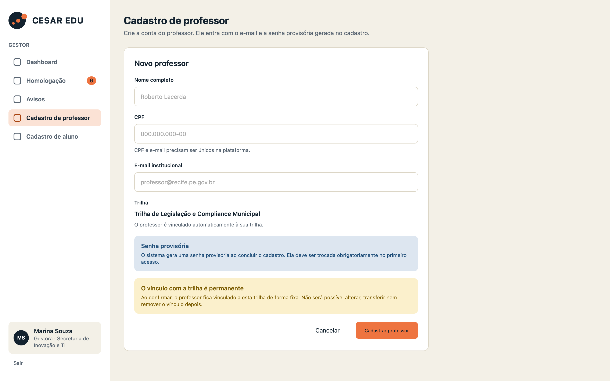
Gestor · Cadastro de professor: nome, CPF, e-mail e trilha com vínculo permanente (RN 1, RN 3)
E-mail ou CPF já cadastrado é bloqueado (RN 2)
Conta criada e vinculada de forma permanente à trilha (RN 3)
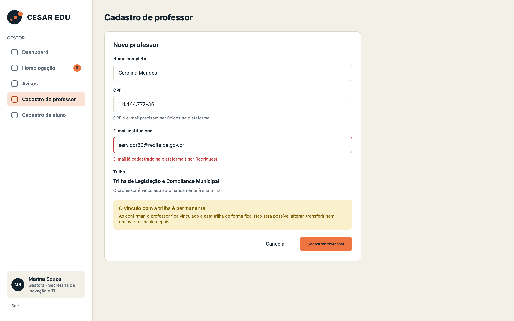
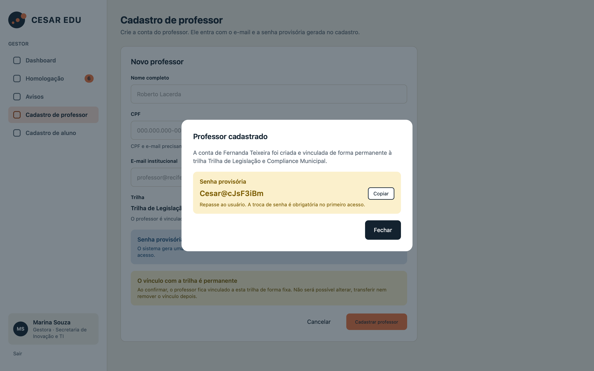
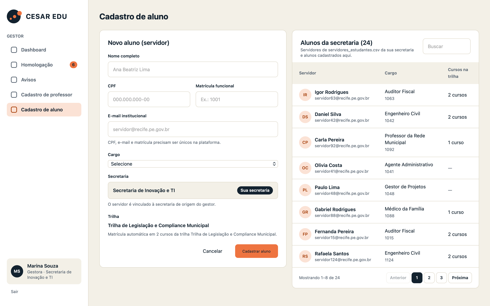
Cadastro de aluno (servidor) pelo gestor, na mesma trilha
02
Avisos e notificações do gestor
GestorFácil
Responsável: Mircio Ferreira
Comogestor da trilha Queropublicar e gerenciar avisos para os alunos da trilha Paramanter a turma informada sobre prazos e orientações
Envolve
Gestor
Aluno
TrilhaDeAprendizagem
Notificacao
Regras de Negócio
BAIXARN 1 · Gestão restrita ao gestor da trilhaSó o gestor responsável cria, edita ou exclui avisos da trilha.
BAIXARN 2 · Validação de conteúdo não vazioAviso em branco ou só com espaços não é publicado (máx. 2.000 caracteres).
MÉDIARN 3 · Feed restrito aos alunos da trilhaApenas servidores com vínculo ativo na trilha veem o aviso.
MÉDIARN 4 · Edição pelo autor e sinal de "editado"Ao editar, o feed é atualizado e exibe "editado" com a data.
BAIXARN 5 · Exclusão de mensagem do feedExcluir remove o aviso da listagem dos alunos.
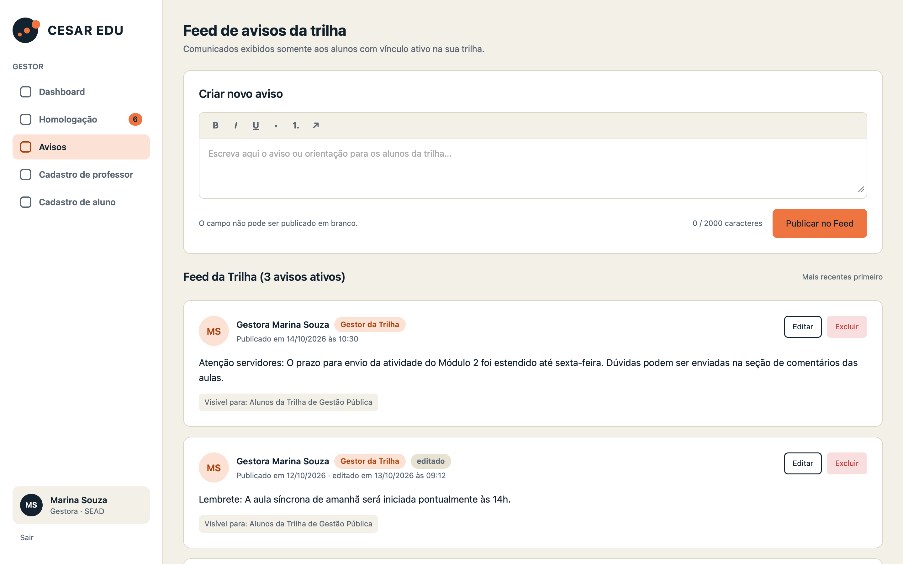
Gestor · Feed de avisos: criar aviso (RN 1, RN 2) e feed da trilha com selo "editado" (RN 4)
Editar aviso (RN 4)
Excluir aviso do feed (RN 5)
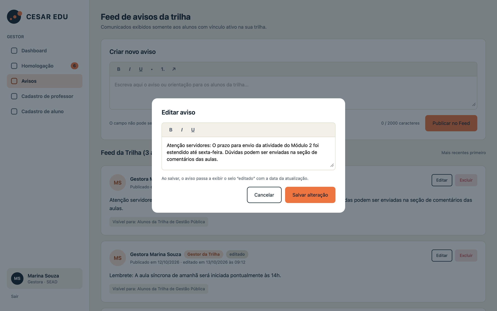
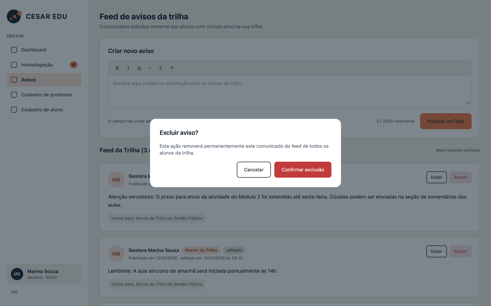
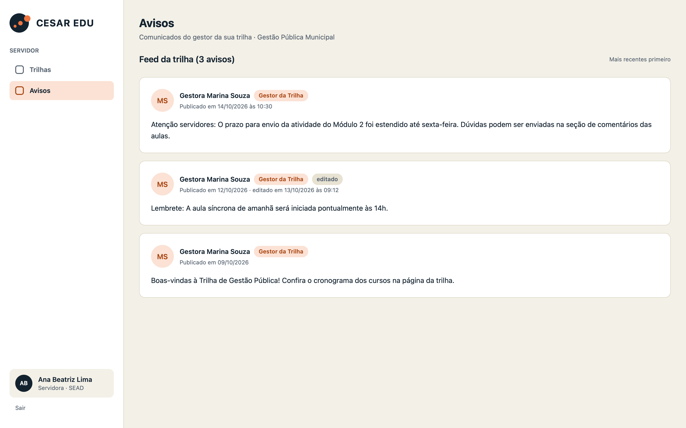
Servidor · Avisos do gestor da trilha, com selo "editado" (RN 3 e RN 4)
03
Gerenciamento de cursos
ProfessorFácil
Responsável: Gabriel Aniceto
Comoprofessor Querocriar, editar e arquivar os meus cursos Paraorganizar o conteúdo que os servidores vão estudar
Envolve
Professor
Servidor
Curso
Regras de Negócio
BAIXARN 1 · Criação de cursoCampos obrigatórios preenchidos e sempre com um professor responsável.
BAIXARN 2 · Consulta e visualização de cursosProfessor lista os próprios cursos; servidor vê os publicados a que tem acesso.
BAIXARN 3 · Atualização de cursoSó o professor responsável (ou administrador) edita dados e status.
BAIXARN 4 · Arquivamento de cursoCurso com matrículas, progresso ou certificados é arquivado, preservando o histórico.
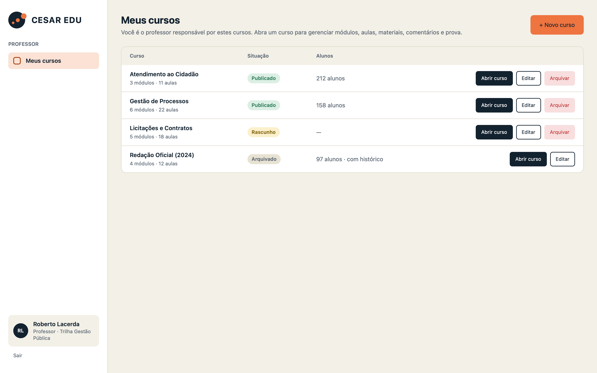
Professor · Meus cursos: situação (Publicado, Rascunho, Arquivado) e alunos (RN 2)
Criar curso (RN 1)
Editar curso (RN 3)
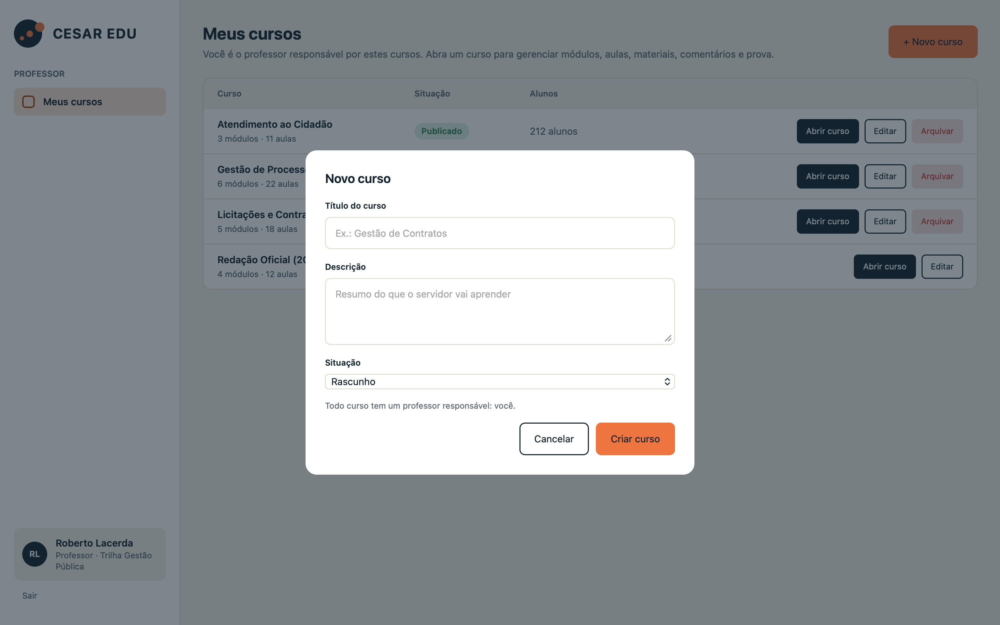
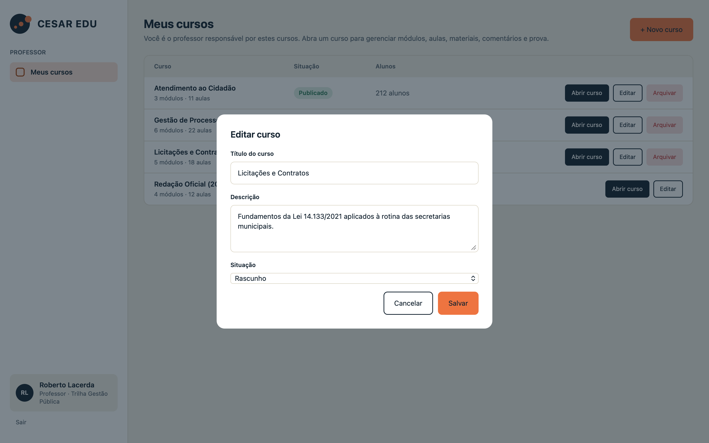
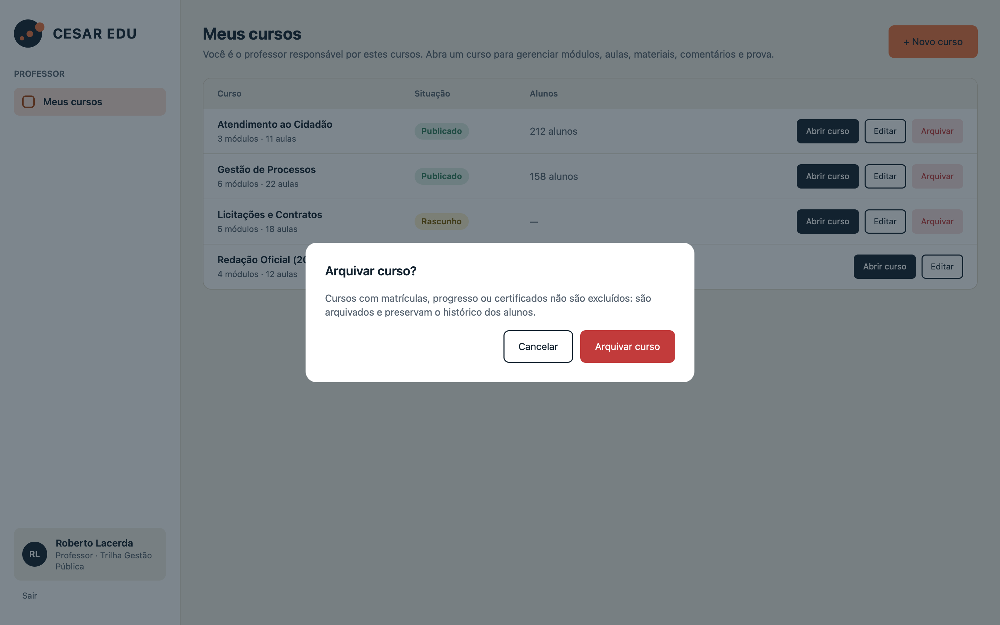
Arquivar curso que já possui histórico (RN 4)
04
Gerenciamento de módulos
ProfessorFácil
Responsável: Gabriel Aniceto
Comoprofessor Queroestruturar meu curso em módulos ordenados Paraorganizar a sequência de aprendizagem do servidor
Envolve
Professor
Servidor
Curso
Módulo
Regras de Negócio
BAIXARN 1 · Criação de móduloSó em cursos do professor responsável; todo módulo tem um curso associado.
BAIXARN 2 · Consulta e visualização de módulosProfessor organiza; servidor vê os módulos do curso na ordem definida.
BAIXARN 3 · Atualização de móduloEdita o título e a descrição do módulo.
BAIXARN 4 · Exclusão de móduloSem aulas, exclui direto; com aulas, bloqueia ou exige tratamento.
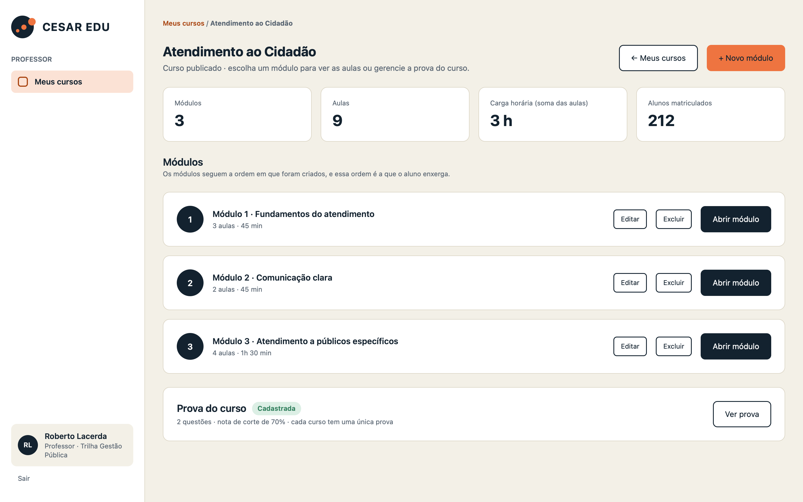
Professor · Módulos do curso, em ordem, com carga horária e prova (RN 2)
Criar módulo (RN 1)
Editar módulo (RN 3)
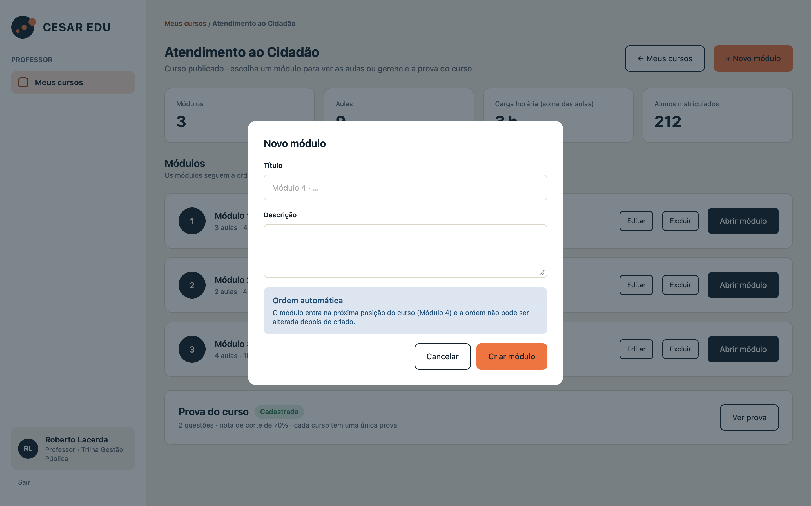
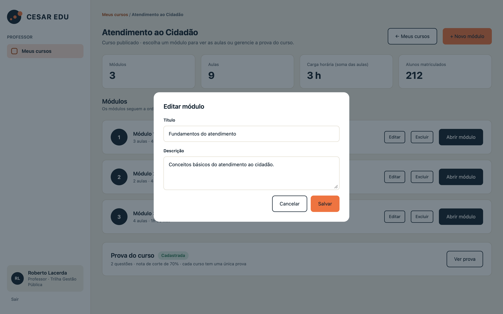
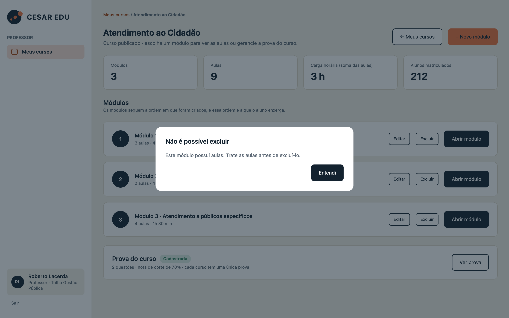
Exclusão de módulo que possui aulas é impedida (RN 4)
05
Gerenciamento de aulas
ProfessorFácil
Responsável: Gabriel Aniceto
Comoprofessor Querocadastrar e manter as aulas de cada módulo Paradisponibilizar o conteúdo em vídeo aos servidores
Envolve
Professor
Servidor
Curso
Módulo
Aula
Regras de Negócio
BAIXARN 1 · Criação de aulaToda aula pertence a um módulo existente de um curso do professor.
BAIXARN 2 · Consulta e visualização de aulasProfessor consulta; servidor acessa as aulas na ordem do módulo.
BAIXARN 3 · Atualização de aulaAltera título, descrição, duração e conteúdo da aula.
BAIXARN 4 · Exclusão de aulaSem progresso, exclui; com histórico, preserva com exclusão lógica ou desativação.
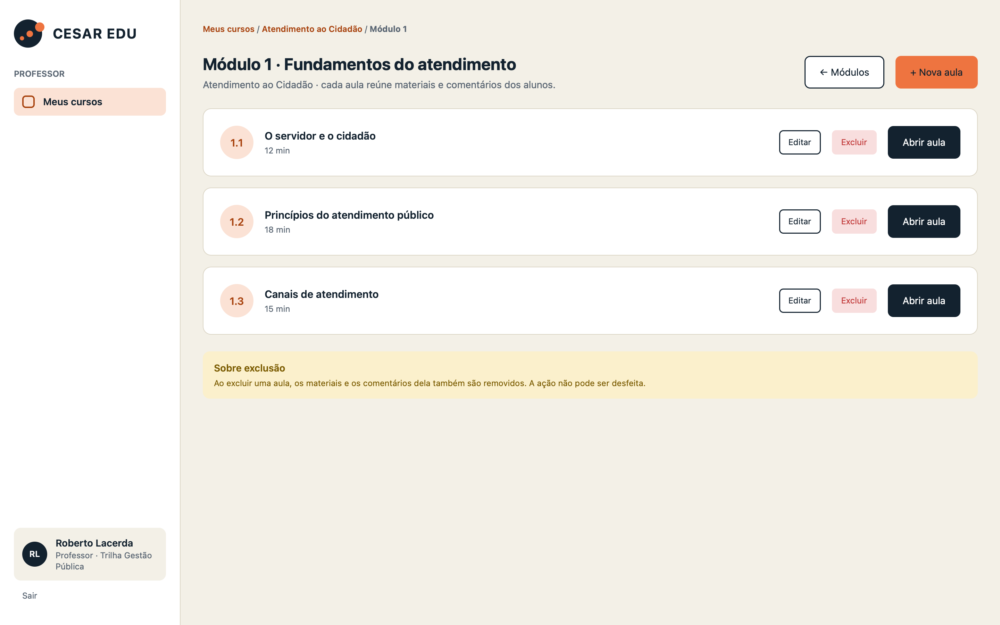
Professor · Aulas do módulo, em ordem e com duração (RN 2)
Criar aula (RN 1)
Editar aula (RN 3)
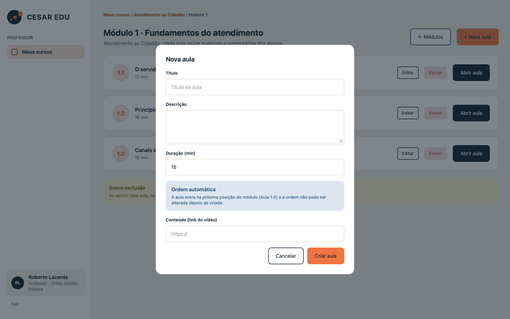
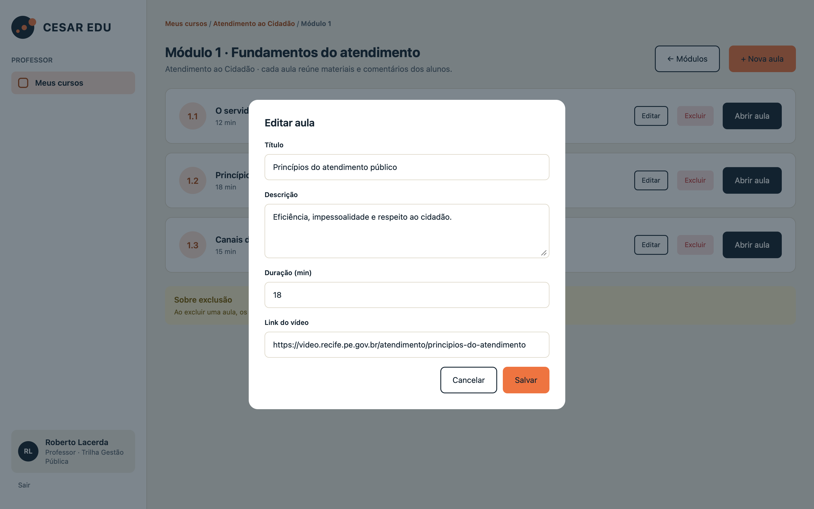
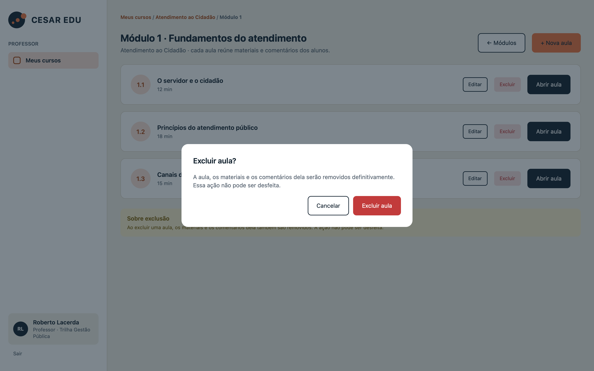
Excluir aula remove também materiais e comentários (RN 4)
06
Materiais de estudo
ProfessorFácil
Responsável: Gabriel Aniceto
Comoprofessor Queroanexar materiais de estudo às minhas aulas Paraapoiar o servidor com arquivos e links complementares
Envolve
Professor
Servidor
Curso
Módulo
Aula
Material
Regras de Negócio
BAIXARN 1 · Criação de materialSó em aulas dos cursos do professor, com tipo e referência válidos.
BAIXARN 2 · Consulta e visualização de materiaisServidor vê ou baixa os materiais das aulas a que tem acesso.
BAIXARN 3 · Atualização de materialAltera título, descrição, tipo, arquivo ou link do material.
BAIXARN 4 · Exclusão de materialApós excluir, o material deixa de ser disponibilizado aos servidores.
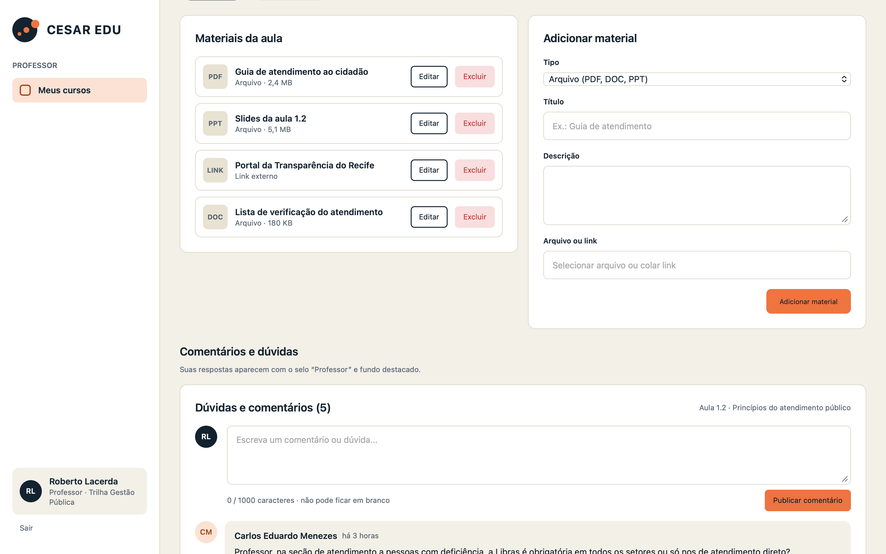
Professor · Aula: materiais cadastrados e formulário "Adicionar material" (RN 1, RN 3)
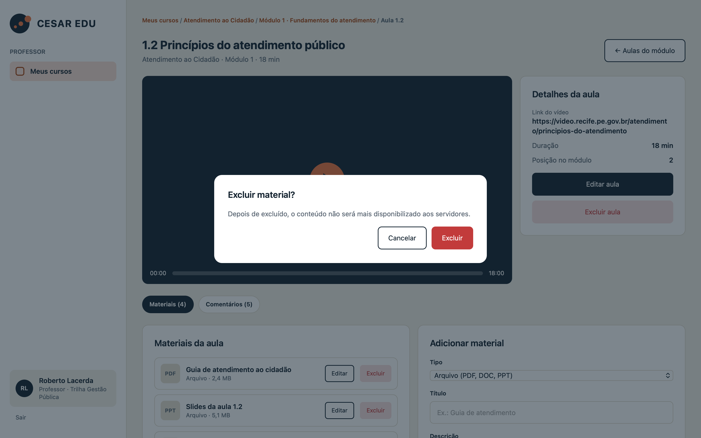
Excluir material de uma aula (RN 4)
Servidor · Trilha e cursos publicados (Cursos, RN 2)
Servidor · Módulos e aulas do curso (Módulos e Aulas, RN 2)
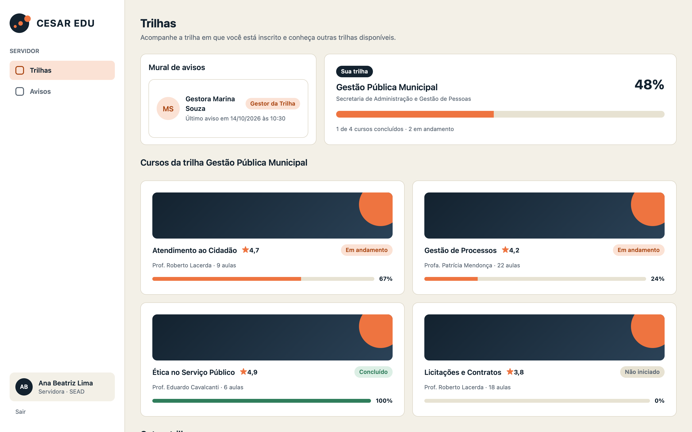
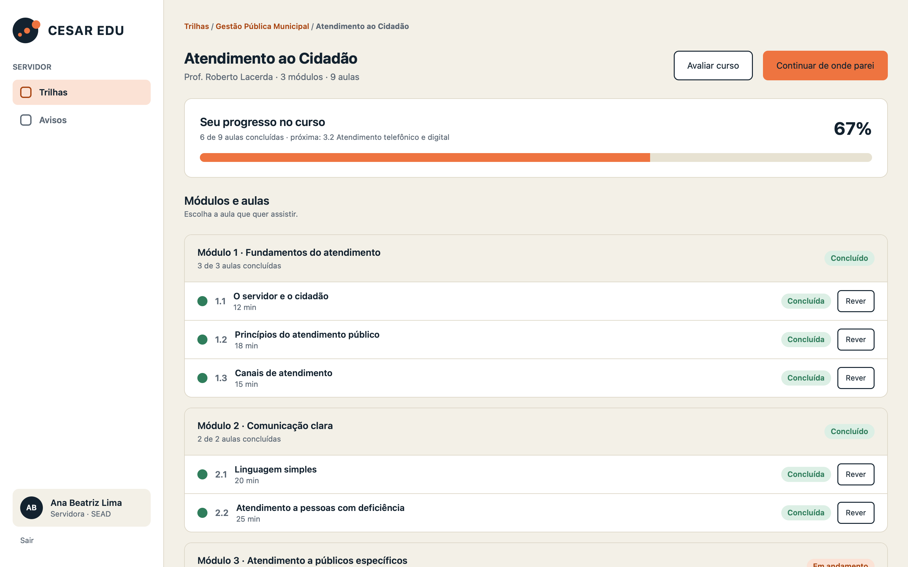
Consulta pelo servidor das funcionalidades 03 a 06 (cursos, módulos, aulas e materiais)
07
Gestão de provas de avaliação
ProfessorMédia
Responsável: Mircio Ferreira
Comoprofessor do curso Querocriar e manter a prova de múltipla escolha Paraavaliar o aprendizado com critério de aprovação definido
Envolve
Curso
Prova
Questão
Alternativa
Gabarito
TentativaDeProva
Regras de Negócio
MÉDIARN 1 · Estrutura mínima da provaMín. 1 questão; cada uma com 2+ alternativas e 1 correta.
BAIXARN 2 · Limite mínimo da nota de corteO percentual de aprovação deve ser superior a 50%.
MÉDIARN 3 · Validação contínua na ediçãoToda alteração revalida as regras antes de salvar.
MÉDIARN 4 · Efeito não retroativo da nota de corteA nova nota vale só para tentativas futuras; resultados passados não mudam.
BAIXARN 5 · Unicidade de prova por cursoUma segunda prova no mesmo curso é bloqueada.
BAIXARN 6 · Gestão restrita ao professor do cursoSó o professor responsável cria, vê, edita ou exclui a prova.
Professor · Módulos do curso: a prova fica no fim da página e, neste curso, ainda não foi criada (RN 5)
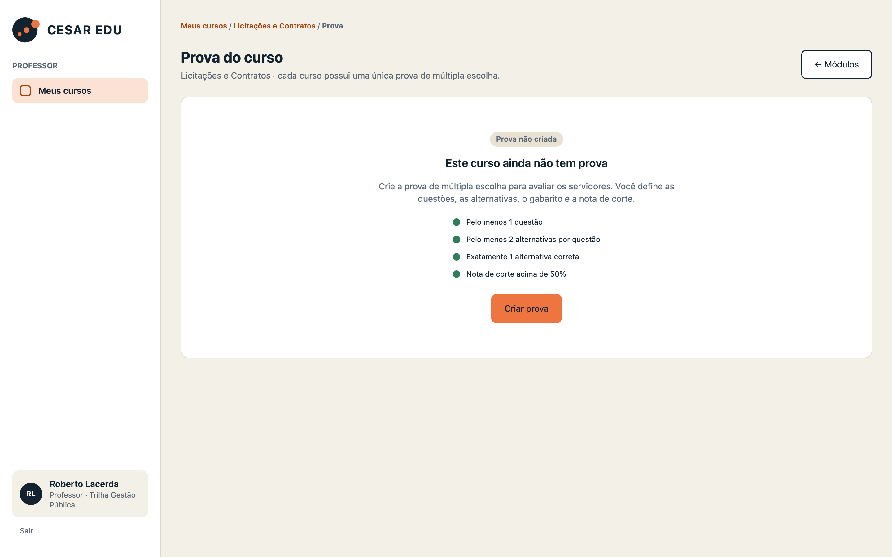
Professor · Curso sem prova: cada curso tem uma só (RN 5)
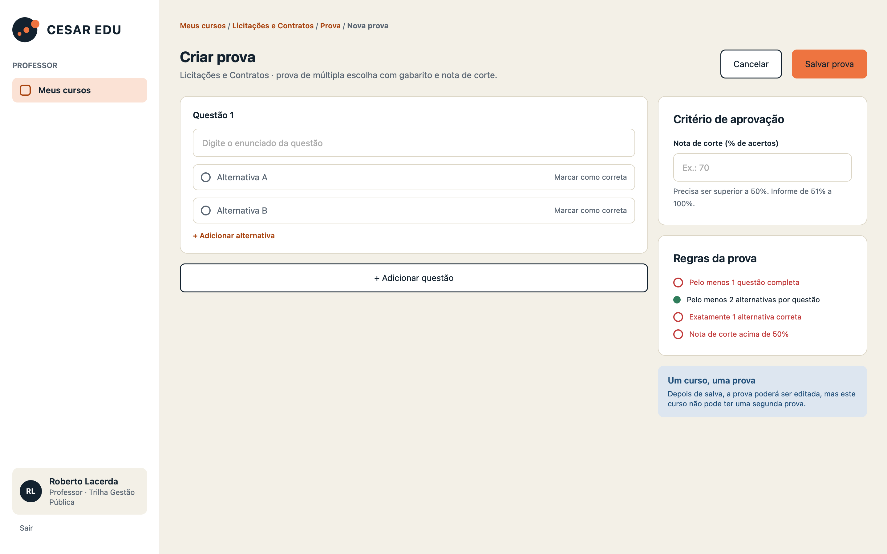
Professor · Criar prova: questões, alternativas, gabarito e regras conferidas em tempo real (RN 1, RN 2)
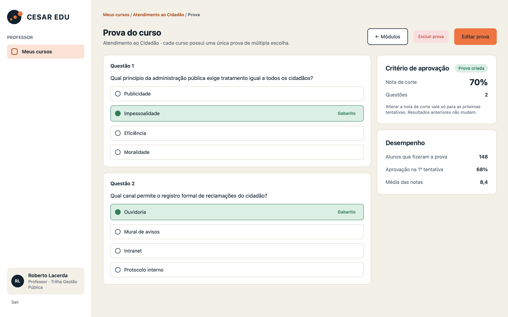
Professor · Prova do curso: gabarito, critério de aprovação (RN 2) e desempenho dos alunos
Editar prova revalida as regras (RN 3)
Excluir prova, restrito ao professor do curso (RN 6)
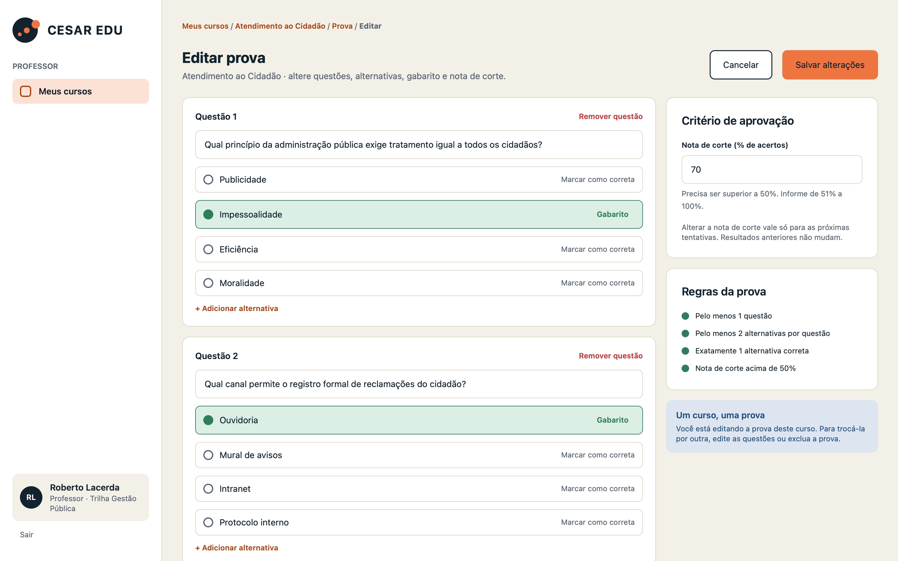
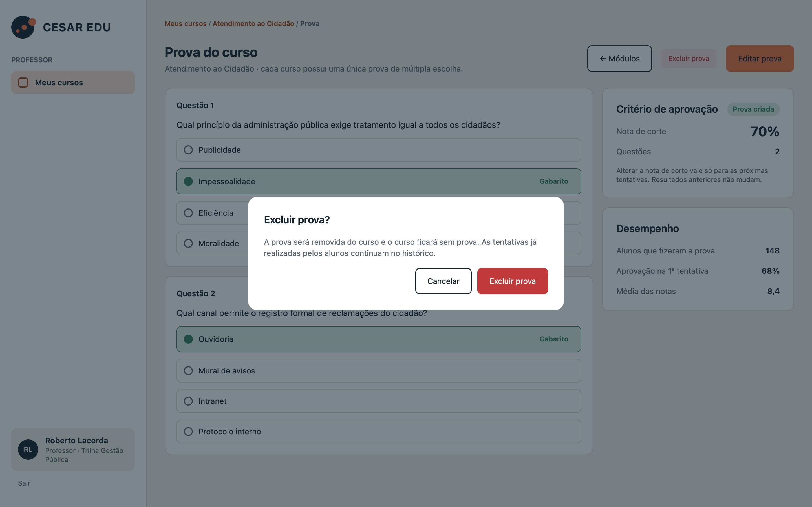
Consumo de provas · tentativas e nota de corte fixada
Consumo de provas · tentativa em andamento
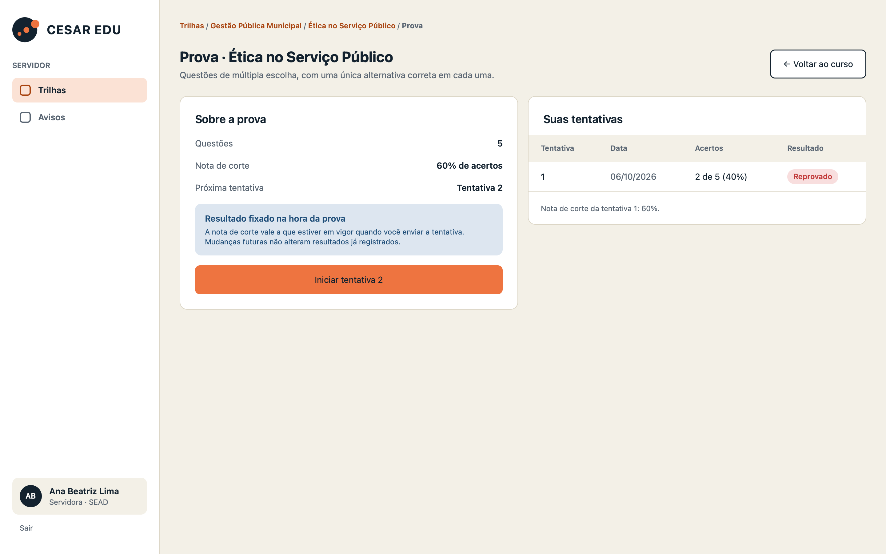
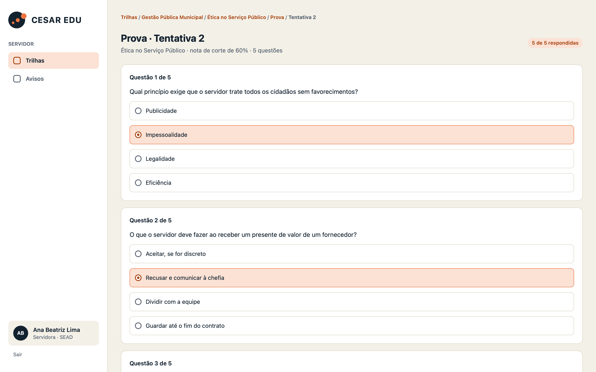
Servidor · Prova do curso (regra de nota de corte não retroativa: funcionalidade 07, RN 4)
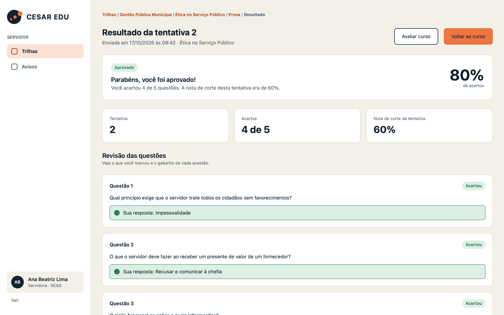
Servidor · Resultado da tentativa, com a nota de corte vigente na hora da prova (funcionalidade 07, RN 4)
08
Consumo de aulas e provas
ServidorMédia
Responsável: Amanda Luz
Comoaluno (servidor público municipal) Queroassistir às aulas e realizar as provas dos cursos Paraacompanhar minha evolução e meu desempenho no curso
Envolve
Aluno
TrilhaDeAprendizagem
Curso
Aula
Matricula
ProgressoAula
Prova
TentativaDeProva
Regras de Negócio
BAIXARN 1 · Matrícula ativa obrigatóriaSó acessa aulas e registra progresso quem tem matrícula ativa no curso.
MÉDIARN 2 · Atualização de progressoRecalcula o % do curso a cada aula; em 100%, a matrícula é concluída.
BAIXARN 3 · Acesso restrito aos cursos da trilhaO aluno só consome os cursos da trilha em que está matriculado.
BAIXARN 4 · Aprovação encerra a provaAluno já aprovado na prova do curso não pode refazê-la.
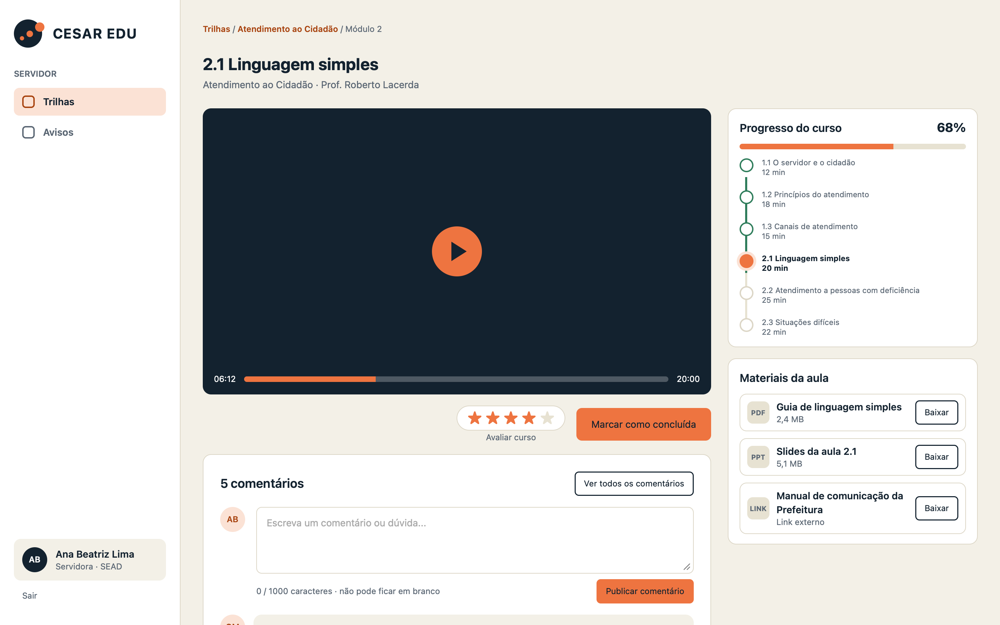
Servidor · Consumo de aulas: vídeo, materiais, progresso do curso (68%) e "Marcar como concluída"
Iniciar o curso exige matrícula ativa (RN 1)
Aula concluída: progresso do curso atualizado (RN 2)
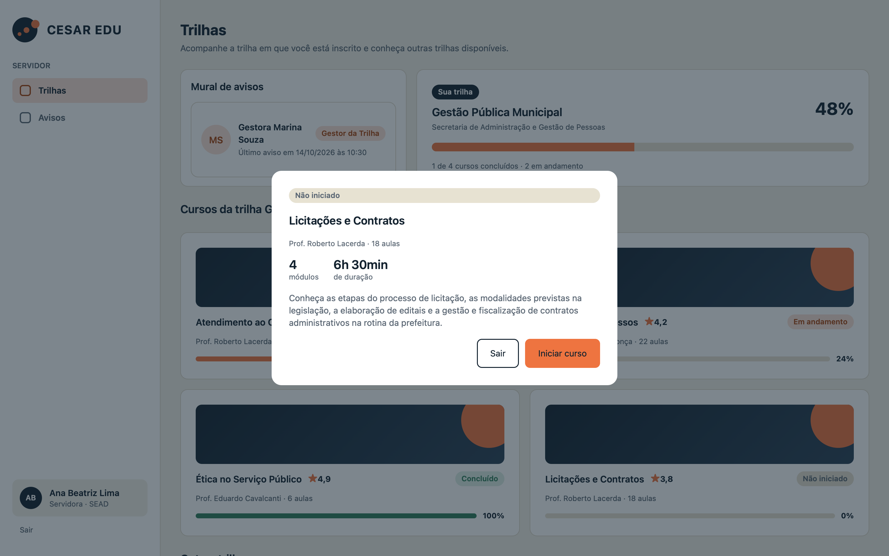
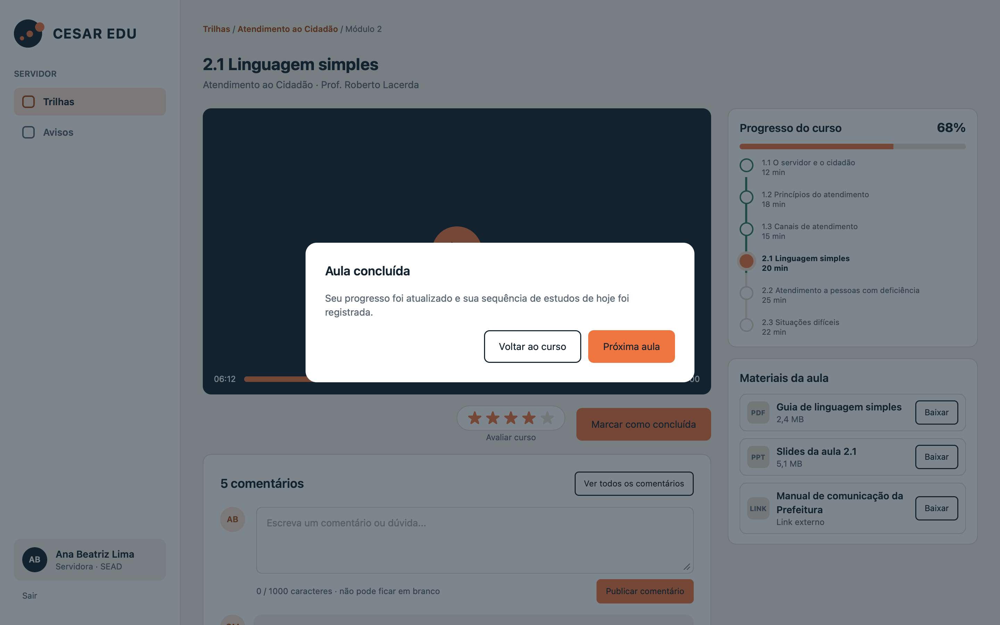
09
Comentários, dúvidas e respostas
Servidor · ProfessorFácil
Responsável: Mircio Ferreira
Comoaluno matriculado ou professor do curso Querocomentar e responder dúvidas em cada aula Paratrocar conhecimento com a turma e o professor
Envolve
Aluno
Professor
Curso
Aula
Matrícula
Comentário (pai e respostas)
Regras de Negócio
MÉDIARN 1 · Permissão de acesso e interaçãoSó publica o professor do curso ou aluno com matrícula ativa.
BAIXARN 2 · Validação de conteúdo não vazioTexto de 1 a 1.000 caracteres válidos; sem envio em branco.
BAIXARN 3 · Destaque e identificação do professorRespostas do professor ganham selo "Professor" e fundo destacado.
BAIXARN 4 · Edição exclusiva do autorSó o autor altera a própria mensagem; editadas exibem "editado".
MÉDIARN 5 · Exclusão em cascataAutor exclui o que é seu; apagar o comentário pai remove as respostas.
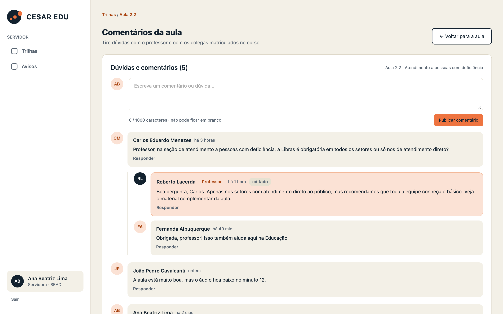
Servidor · Comentários da aula, com resposta do professor em destaque (RN 3)
Editar o próprio comentário (RN 4)
Excluir o próprio comentário e respostas (RN 5)
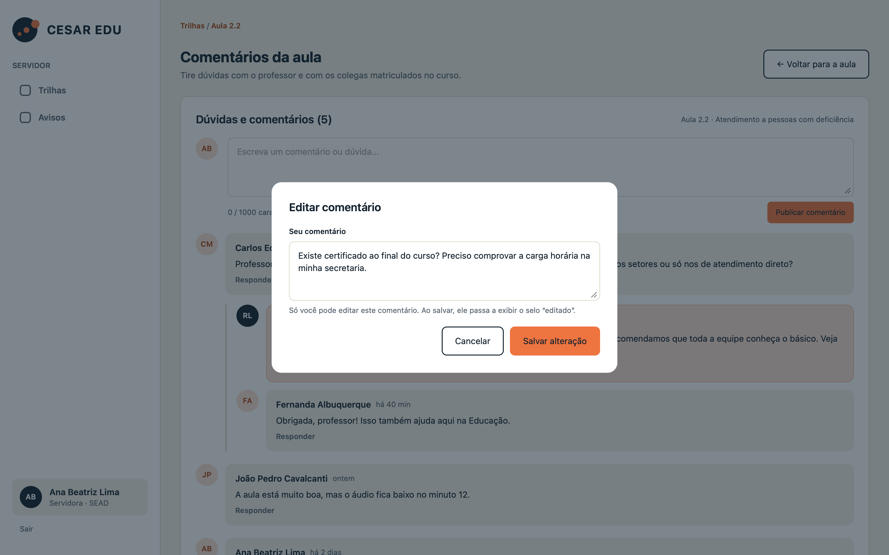
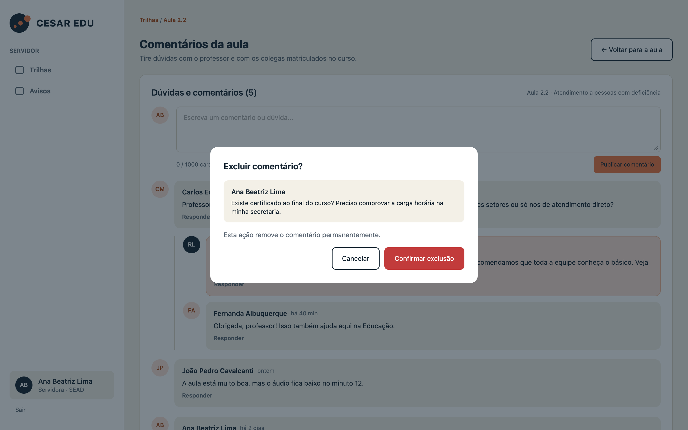
Professor · Mesma conversa na visão do professor (RN 1)
Professor responde um comentário (RN 3)
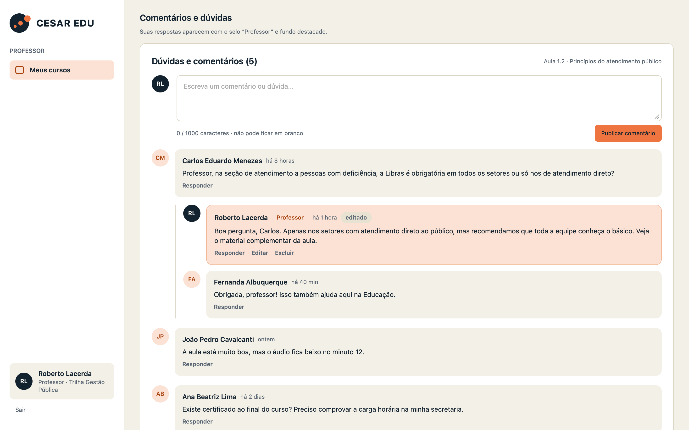
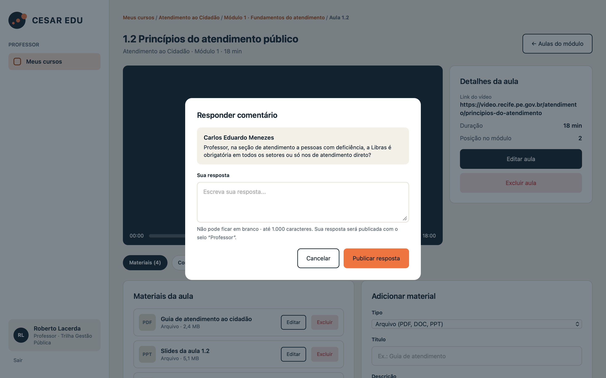
10
Avaliação e feedback do curso
ServidorFácil
Responsável: Amanda Luz
Comoaluno matriculado em um curso Querodar uma nota em estrelas e comentar sobre o curso Pararegistrar minha opinião e ajudar a melhorar os cursos
Envolve
Aluno
Curso
Matricula
AvaliacaoCurso
Regras de Negócio
BAIXARN 1 · Matrícula ativa para avaliarQualquer aluno com matrícula ativa avalia, sem precisar concluir o curso.
BAIXARN 2 · Unicidade e edição da avaliaçãoUma avaliação por curso; o aluno pode atualizar nota e comentário.
BAIXARN 3 · Recálculo da nota média do cursoA cada envio, recalcula a média e o total de avaliações.
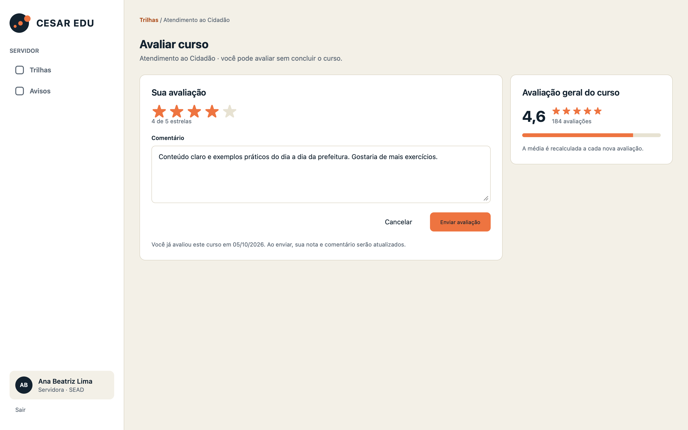
Servidor · Avaliar curso: nota, comentário editável (RN 2) e média geral recalculada (RN 3)
Avaliar direto da aula (RN 1)
Avaliação enviada (RN 2)
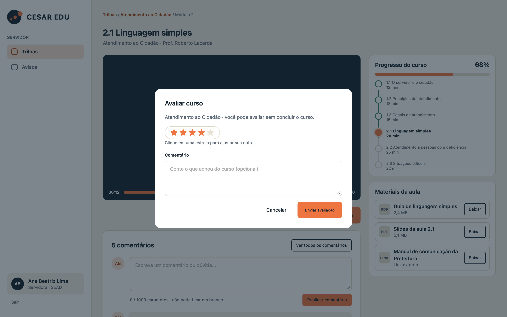
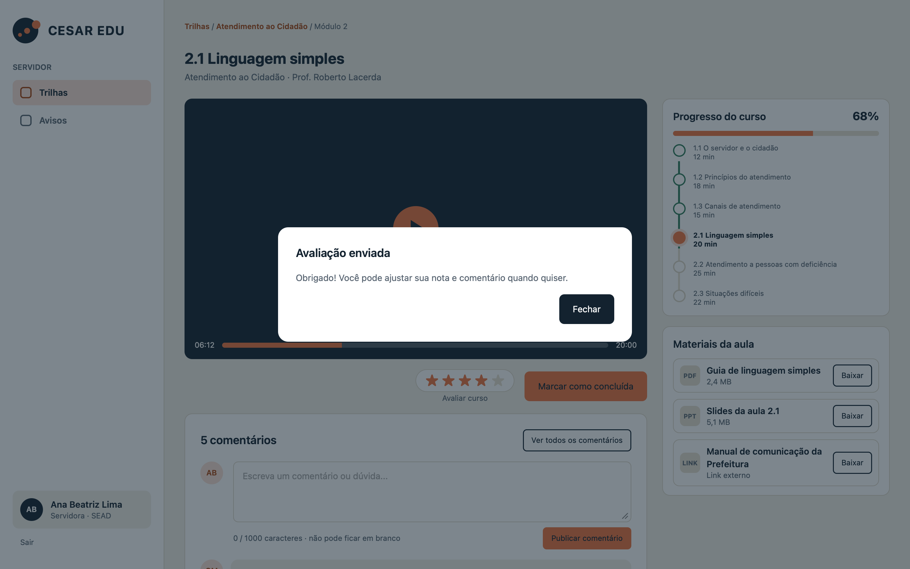
11
Solicitação de acesso a outras trilhas
ServidorFácil
Responsável: Amanda Luz
Comoaluno (servidor público municipal) Querosolicitar acesso a trilhas de outras secretarias Paraampliar minha formação, com aprovação do gestor
Envolve
Aluno
TrilhaDeAprendizagem
SolicitacaoTrilha
Notificacao
Gestor
Regras de Negócio
BAIXARN 1 · Unicidade de solicitaçãoSem pedido pendente ou matrícula ativa na mesma trilha.
BAIXARN 2 · Validação de justificativaJustificativa obrigatória, de 10 a 500 caracteres válidos.
BAIXARN 3 · Notificação ao gestor da trilhaO gestor da secretaria é notificado automaticamente.
Pedido a partir do catálogo de trilhas
Gestor notificado (RN 3)
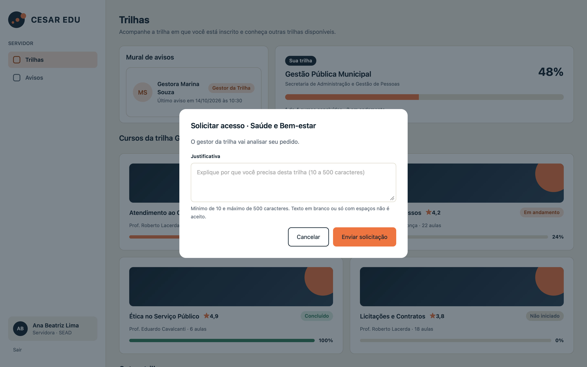
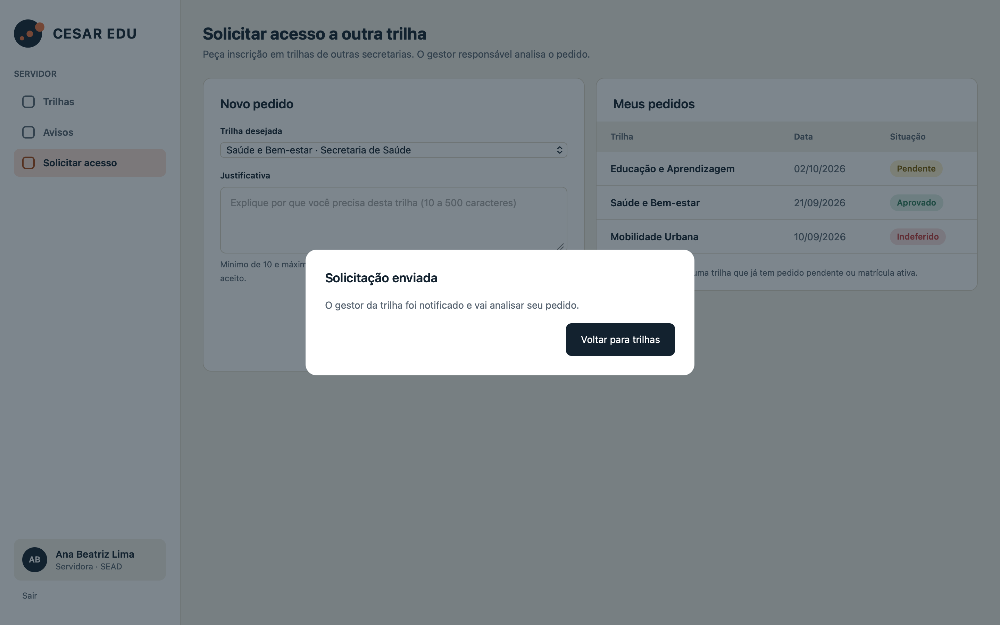
12
Homologação de solicitações de acesso
GestorFácil
Responsável: Eric Albuquerque
Comogestor da trilha Queroaprovar ou indeferir pedidos de acesso à minha trilha Paracontrolar quem ingressa e liberar a matrícula
Envolve
Gestor
Servidor
TrilhaDeAprendizagem
SolicitacaoAcessoTrilha
MatriculaTrilha
Regras de Negócio
BAIXARN 1 · Exibição de solicitações pendentesO painel mostra só os pedidos pendentes das trilhas do gestor.
BAIXARN 2 · Justificativa obrigatória no indeferimentoParecer de no mínimo 10 caracteres para recusar.
MÉDIARN 3 · Homologação e matrícula automáticaAprovar cria a matrícula ativa e libera os cursos na hora.
BAIXARN 4 · Decisão irreversível e sem duplicidadeDecidido, não reabre; pedido duplicado ou com matrícula ativa é bloqueado.
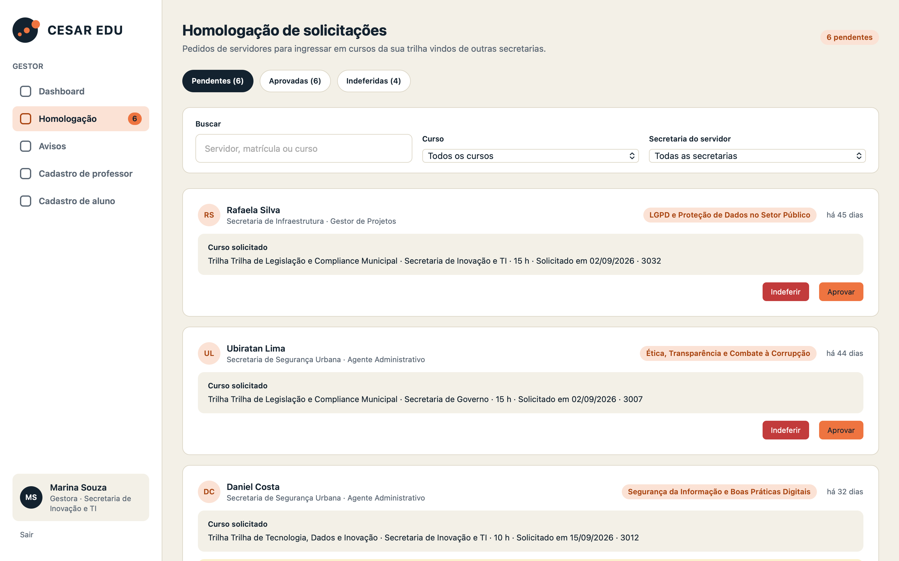
Gestor · Fila de pedidos pendentes de análise (RN 1)
Aprovar cria a matrícula automática (RN 3)
Indeferir exige parecer de 10+ caracteres (RN 2)
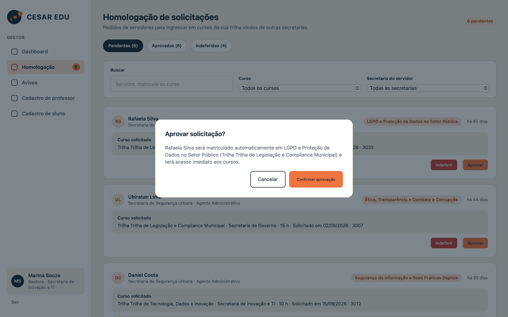
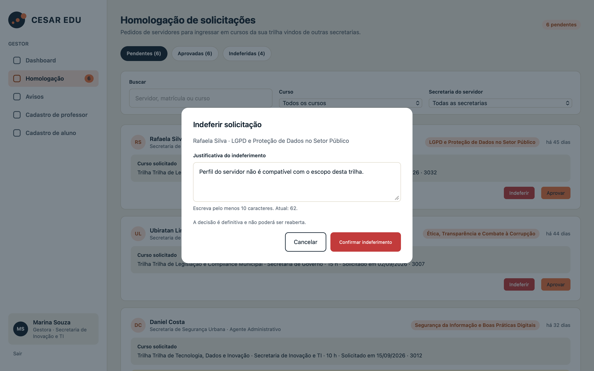
Solicitações aprovadas (RN 4)
Solicitações indeferidas (RN 4)
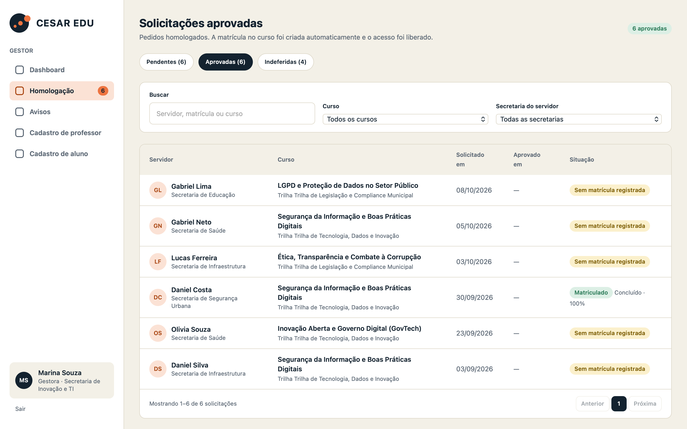
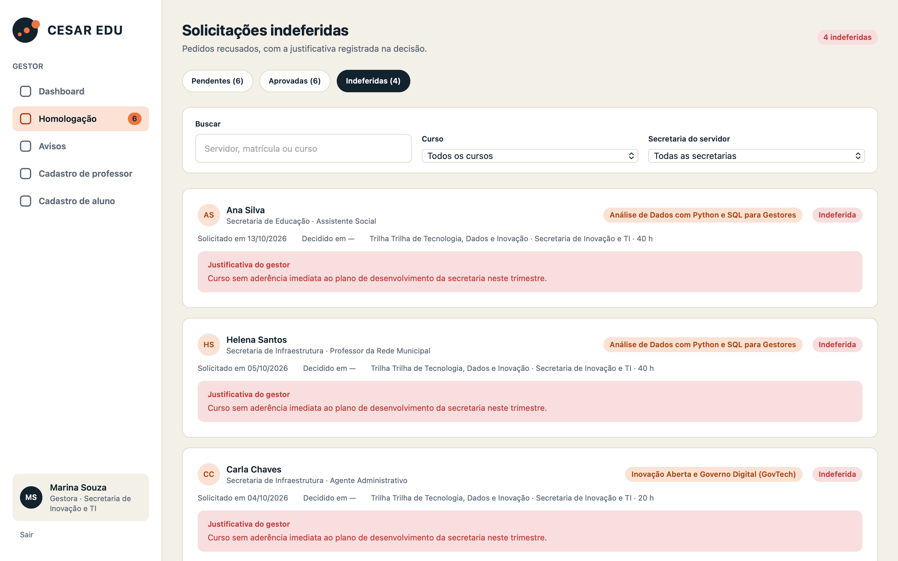
13
Dashboard analítico do gestor
GestorAlta
Responsável: Eric Albuquerque
Comogestor da trilha Queroacompanhar indicadores e filtros da minha equipe Paraidentificar gargalos e agir sobre o engajamento
Envolve
Gestor
TrilhaDeAprendizagem
Curso
Servidor
MatriculaTrilha
MatriculaCurso
TentativaProva
PesquisaSatisfacao
DashboardConfigGestor
DashboardLogConsulta
Regras de Negócio
BAIXARN 1 · Escopo restrito ao gestor responsávelVê só dados das trilhas e servidores sob sua responsabilidade.
MÉDIARN 2 · Filtros e visualizações salvasSalva filtros, ordenação e layout para os próximos acessos.
BAIXARN 3 · Auditoria de consultasCada consulta grava parâmetros, usuário e tempo de resposta.
MÉDIARN 4 · Progresso coletivo e meta da secretariaHoras concluídas no mês comparadas à meta definida pela liderança.
Regras de Negócio · continuação
13 · Dashboard analítico do gestor
MÉDIARN 5 · Acompanhamento individual da equipeTabela por servidor: status, avanço na trilha e nota acumulada.
ALTARN 6 · Aprovação na primeira tentativa% de servidores que atingem a nota mínima já na 1ª tentativa.
MÉDIARN 7 · Média de notas e índice de reprovaçãoMédia por curso e % de tentativas abaixo da nota mínima.
ALTARN 8 · Evasão e comparativo entre trilhasAbandono de cursos e indicadores comparados entre trilhas.
Gestor · Dashboard: filtros, indicadores (aprovação na 1ª tentativa, evasão) e meta mensal de horas (RN 2, RN 4, RN 6, RN 8)
Acompanhamento individual dos servidores: status, avanço, nota e último acesso (RN 5)
Média de notas e índice de reprovação por curso (RN 7)